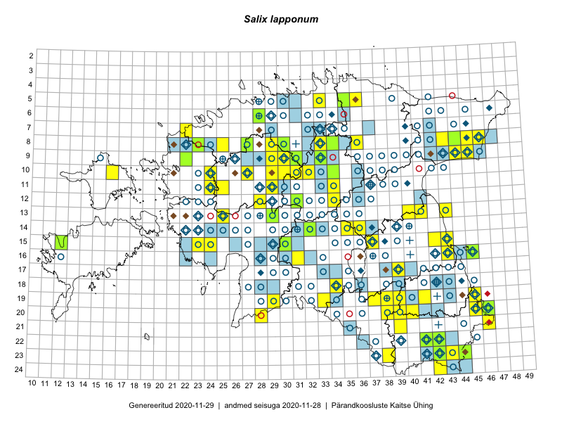

Salix lapponum
Uuendatud: 2016-12-02
Kaardile koondatud taksonid: Salix lapponum L.

Kaart põhineb 62 kirjel, neist vaatlusi 60 ja eksemplare 2. Taksonit on leitud 45 ruudust.
Kuvatud viited 20 esimesele andmebaasikirjele, ülejäänud PlutoFis
- Ott Luuk, Toivo Sepp: 2015-07-29: 09-31: ala
- Ott Luuk, Peedu Saar: 2015-08-12: 23-43: ala
- Peedu Saar, Liina Oja: 2015-07-20: 08-44: ala
- Peedu Saar, Liina Oja: 2015-07-22: 08-45: ala
- Toomas Kukk, Tiit Hallikma: 2015-06-11: 11-29: ala
- Peedu Saar, Liina Oja: 2015-07-24: 09-45: ala
- Peedu Saar: 2015-08-10: 13-40: ala
- Peedu Saar, Ott Luuk: 2015-08-12: 23-42: ala
- Peedu Saar, Ott Luuk: 2015-08-13: 24-42: ala
- Ott Luuk, Hannes Pehlak: 2015-06-09: 12-31: ala
- Indrek Tammekänd: 2015-04-06: 15-23: ala
- Indrek Tammekänd, Liisa Rennel, Agu Leivits, Hannes Pehlak, Irja Tammekänd: 2015-04-27: 15-24: ala
- Jana-Maria Habicht, Ester Valdvee: 2015-06-28: 08-34: ala
- Thea Kull, Meeli Mesipuu: 2015-08-19: 19-45: ala
- Thea Kull, Meeli Mesipuu: 2015-08-12: 16-43: ala
- Ott Luuk, Toivo Sepp: 2015-08-21: 10-29: ala
- Ott Luuk, Toivo Sepp: 2015-08-20: 11-29: ala
- Ott Luuk: 2015-08-03: 10-32: ala
- Eeva-Maria Jeletsky, Tarmo Niitla: 2015-08-10: 19-37: ala
- Mari Reitalu, Oliver Parrest: 2015-07-14: 15-12: ala